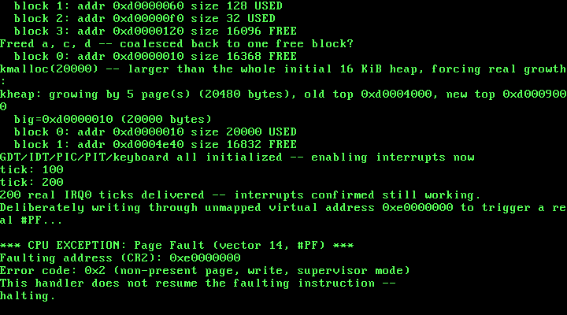

10. Page Fault Handling: A Real ISR14¶
What you will understand: why turning paging on in Chapter 8 quietly left one real gap open -- no handler for the exception paging itself can raise -- the real #PF error-code bit layout and CR2 register cited from source, why an exception that pushes an error code needs an assembly stub genuinely different from Chapter 4's #DE stub, and how to prove a page fault handler actually works by triggering a real one on purpose rather than trusting it would fire correctly if it ever needed to.
What you need to know first: Chapter 4's isr0_handler (the shape every exception handler in this book follows: report honestly, halt, do not try to resume), Chapter 8's paging (the mechanism that can raise this exception at all), and Chapter 9's heap (whose completion made this the last real gap left open in this book's memory story). This chapter stays in Part 5, closing out the memory subsystem this Part has been building since Chapter 7.
The gap Chapter 8 left open¶
Chapter 8 turned paging on. Every real run since then has stayed inside memory this kernel deliberately mapped -- the identity-mapped 0-64 MiB range, the one-off 0xC0000000 test page, the kernel heap's own region -- so nothing has ever actually raised a page fault on real hardware in this book. But the CPU does not know that discipline exists. The moment paging is live, any access to an unmapped or protection-violating address raises vector 14, whether this kernel planned for it or not -- and until this chapter, nothing in the IDT points vector 14 anywhere at all. A real page fault right now would find an empty gate and escalate into a double fault, then a triple fault, and reset the machine. This chapter closes that gap for real, not by assuming it will never happen, but by deliberately making it happen and proving the real handler catches it.
The real #PF error code and CR2, cited from source¶
"In addition, it sets the value of the CR2 register to the virtual address which caused the Page Fault."
(OSDev Wiki, "Exceptions": https://wiki.osdev.org/Exceptions)
Vector 14 is a fault (resumable, in principle) that does push a 32-bit error code -- unlike vector 0's #DE, which pushes none. The bits this chapter reads:
"P (bit 0): When set, the page fault was caused by a page-protection violation. When not set, it was caused by a non-present page." "W (bit 1): When set, the page fault was caused by a write access. When not set, it was caused by a read access." "U (bit 2): When set, the page fault was caused while CPL = 3."
(same page)
Two real facts drive this chapter's design: the faulting address is not in the error code at all -- it is in CR2, a separate register the CPU sets before the handler runs -- and the error code itself only describes why the access failed, not where.
010_isr14.asm: a stub that has to handle a real error code¶
Chapter 4's isr0.asm could pusha/call/popa/iret because #DE pushes nothing extra. #PF's real error code changes that shape:
; Chapter 10: the real machine code the CPU jumps to on a #PF (Page
; Fault). Unlike #DE at vector 0 (009_isr0.asm), the CPU pushes a real
; 32-bit error code for this exception before jumping here (OSDev
; Wiki, "Exceptions": vector 14's Error Code column reads "Yes") --
; so this stub cannot simply pusha/popa/iret the way isr0's did. The
; error code sits on the stack just above the eight registers pusha
; pushes, and this stub reads it there, passes it as a real cdecl
; argument to isr14_handler, and -- critically -- discards it with its
; own `add esp, 4` before IRET, since IRET itself only ever pops
; EIP/CS/EFLAGS and has no idea a fourth value is sitting underneath
; them.
BITS 32
section .text
extern isr14_handler
global isr14
isr14:
pusha ; save eax, ecx, edx, ebx, esp, ebp, esi, edi
mov eax, [esp+32] ; the CPU's error code sits right above the
; eight 4-byte registers pusha just pushed
push eax ; pass it as isr14_handler's one cdecl argument
call isr14_handler
add esp, 4 ; cdecl: caller cleans up its own pushed argument
popa ; restore every register pusha saved
add esp, 4 ; discard the CPU's own error code -- IRET
; does not expect it and does not pop it
iret ; pops EIP, CS, and EFLAGS, exactly what
; remains on the stack now
Two real details matter here. First, [esp+32] is not an arbitrary offset -- pusha pushes exactly eight 4-byte registers, so the CPU's own error code, pushed before this stub ever ran, sits exactly 32 bytes above wherever esp lands right after pusha completes. Second, add esp, 4 right before iret is not optional cleanup -- iret only ever pops EIP, CS, and EFLAGS; it has no idea a fourth value (the error code) is still sitting underneath them, and skipping this line would leave the stack permanently misaligned for every interrupt this kernel handles afterward.
010_isr_handlers.c: decoding what the CPU actually said¶
#ifndef UNIX_OS_010_ISR_HANDLERS_H
#define UNIX_OS_010_ISR_HANDLERS_H
#include <stdint.h>
/* The real C handler 010_isr0.asm's stub calls on a #DE fault. Nothing
* in C calls it directly -- only the assembly stub does -- so this
* declaration exists purely so 010_isr_handlers.c has a header to
* define against, the same one-module-one-header shape every other
* file in this book already follows. */
void isr0_handler(void);
/* The real C handler 010_isr14.asm's stub calls on a #PF fault, with
* the CPU's own real error code passed as its one argument -- the
* stub itself cannot decode the error code or read CR2, since neither
* is something a plain assembly stub has any business interpreting. */
void isr14_handler(uint32_t error_code);
#endif
/* Chapter 5: this book's first real exception handler (isr0_handler,
* unchanged since). Chapter 10 adds this book's second: isr14_handler,
* for #PF -- and unlike #DE, a page fault carries real, decodable
* information about exactly what went wrong, which this handler reads
* and prints rather than just reporting "a fault happened."
*
* Like isr0_handler, this one does not try to resume the faulting
* instruction -- this book has no demand paging, no swapping, nothing
* that could make an unmapped or protected address valid by the time
* this handler returns, so retrying would just fault again on the
* same instruction, forever. Reporting the fault honestly and halting
* is still the right call until a later chapter gives this kernel a
* real mechanism to fix the underlying mapping and actually resume. */
#include "010_isr_handlers.h"
#include "010_printf.h"
void isr0_handler(void) {
kprintf("\n*** CPU EXCEPTION: Divide Error (vector 0, #DE) ***\n");
kprintf("A DIV or IDIV instruction attempted to divide by zero.\n");
kprintf("This handler does not resume the faulting instruction --\n");
kprintf("halting.\n");
__asm__ volatile ("cli");
for (;;) {
__asm__ volatile ("hlt");
}
}
/* Error code bit layout, cited field-for-field:
* P (bit 0): "When set, the page fault was caused by a
* page-protection violation. When not set, it was
* caused by a non-present page."
* W (bit 1): "When set, the page fault was caused by a write
* access. When not set, it was caused by a read access."
* U (bit 2): "When set, the page fault was caused while CPL = 3."
* (OSDev Wiki, "Exceptions", vector 14 / #PF: https://wiki.osdev.org/Exceptions)
*
* The faulting linear address itself is not part of the error code at
* all -- the same page notes "it sets the value of the CR2 register
* to the virtual address which caused the Page Fault," so this
* handler reads CR2 directly rather than looking for it on the stack. */
void isr14_handler(uint32_t error_code) {
uint32_t faulting_address;
__asm__ volatile ("mov %%cr2, %0" : "=r" (faulting_address));
kprintf("\n*** CPU EXCEPTION: Page Fault (vector 14, #PF) ***\n");
kprintf("Faulting address (CR2): 0x%x\n", faulting_address);
kprintf("Error code: 0x%x (%s, %s, %s)\n",
error_code,
(error_code & 0x1u) ? "protection violation" : "non-present page",
(error_code & 0x2u) ? "write" : "read",
(error_code & 0x4u) ? "user mode" : "supervisor mode");
kprintf("This handler does not resume the faulting instruction --\n");
kprintf("halting.\n");
__asm__ volatile ("cli");
for (;;) {
__asm__ volatile ("hlt");
}
}
isr14_handler reads CR2 itself, directly, via inline assembly -- not because the stub couldn't have read it too, but because CR2 is a CPU register, not a stack value, and reading it in C keeps the assembly stub's own job limited to exactly what only assembly can do (saving registers, matching the CPU's real calling convention). Like isr0_handler before it, this handler does not attempt to resume the faulting instruction: this book has no demand paging, no swap, nothing that could make address 0xE0000000 valid by the time this handler returns, so retrying would only fault again, forever. Reporting the fault -- the real faulting address, and a real, bit-by-bit decode of why it failed -- and halting honestly is still the right call.
010_idt.c: one new gate, same shape as every other¶
The IDT descriptor itself does not know or care that vector 14's exception happens to push an error code -- that distinction lives entirely in 010_isr14.asm's own stub, not in how the gate gets installed:
#ifndef UNIX_OS_010_IDT_H
#define UNIX_OS_010_IDT_H
/* Installs this book's IDT: Chapter 4's own #DE handler at vector 0,
* Chapter 5's own IRQ1 (keyboard) gate at vector 0x21, and Chapter
* 6's own IRQ0 (PIT) gate at vector 0x20, all unchanged, plus this
* chapter's new real gate at vector 14 -- #PF, the page fault
* exception paging has been capable of raising since Chapter 8, but
* that nothing installed a real handler for until now. */
void idt_init(void);
#endif
/* This book's Interrupt Descriptor Table, extended from Chapter 6. The
* struct layout, the type-attributes byte derivation, and every gate
* through vector 0x21 are unchanged -- see Chapters 4-6 for the full
* citation and derivation of those. This chapter adds exactly one
* more real gate: vector 14, #PF -- the page fault exception, live
* and capable of firing since Chapter 8 turned paging on, but with no
* real handler installed for it until now. */
#include <stdint.h>
#include "010_idt.h"
struct idt_entry {
uint16_t offset_low;
uint16_t selector;
uint8_t zero;
uint8_t type_attributes;
uint16_t offset_high;
} __attribute__((packed));
struct idt_ptr {
uint16_t limit;
uint32_t base;
} __attribute__((packed));
#define IDT_ENTRY_COUNT 256
static struct idt_entry idt_entries[IDT_ENTRY_COUNT];
static struct idt_ptr idt_pointer;
extern void isr0(void); /* 010_isr0.asm -- unchanged from Chapter 4 */
extern void isr14(void); /* 010_isr14.asm -- this chapter's own stub */
extern void irq0(void); /* 010_irq0.asm -- unchanged from Chapter 6 */
extern void irq1(void); /* 010_irq1.asm -- unchanged from Chapter 5 */
extern void idt_flush(uint32_t idt_ptr_addr);
static void idt_set_gate(int vector, uint32_t handler, uint16_t selector, uint8_t type_attributes) {
idt_entries[vector].offset_low = (uint16_t) (handler & 0xFFFF);
idt_entries[vector].offset_high = (uint16_t) ((handler >> 16) & 0xFFFF);
idt_entries[vector].selector = selector;
idt_entries[vector].zero = 0;
idt_entries[vector].type_attributes = type_attributes;
}
void idt_init(void) {
for (int i = 0; i < IDT_ENTRY_COUNT; i++) {
idt_set_gate(i, 0, 0, 0);
}
/* Vector 0: #DE, unchanged from Chapter 4. */
idt_set_gate(0, (uint32_t) isr0, 0x08, 0x8E);
/* Vector 14: #PF, this chapter's own new gate. Same selector
* (0x08) and 0x8E type-attributes byte as every other gate here --
* the IDT descriptor itself does not know or care that this
* particular vector's exception pushes an error code; only
* 010_isr14.asm's own stub has to know that. */
idt_set_gate(14, (uint32_t) isr14, 0x08, 0x8E);
/* Vector 0x20: IRQ0, the PIT timer, unchanged from Chapter 6. */
idt_set_gate(0x20, (uint32_t) irq0, 0x08, 0x8E);
/* Vector 0x21: IRQ1, the keyboard, unchanged from Chapter 5. */
idt_set_gate(0x21, (uint32_t) irq1, 0x08, 0x8E);
idt_pointer.limit = (uint16_t) (sizeof(idt_entries) - 1);
idt_pointer.base = (uint32_t) &idt_entries;
idt_flush((uint32_t) &idt_pointer);
}
010_kmain.c: proving the handler works by actually triggering the fault¶
Everything through Chapter 9 runs first and unchanged -- the memory map, the physical memory manager's demonstration, the paging aliasing proof, and the full kernel heap demonstration -- for the same reason it always has: if anything below it broke, that would be the first real evidence. What's new sits at the very end, after this chapter's own regression proof that interrupts are still genuinely firing:
/* Chapter 10: this kernel finally handles the one CPU exception paging
* has been able to raise since Chapter 8 with nothing installed to
* catch it -- #PF, the page fault. Every chapter before this one has
* been careful to touch only memory that is genuinely mapped, so
* nothing has ever actually triggered a page fault on real hardware
* in this book. This chapter changes that on purpose: after proving
* interrupts are still genuinely running (a real wait for real IRQ0
* ticks, the same regression proof every chapter since Chapter 6 has
* relied on), it deliberately writes through a virtual address that
* was never mapped by anything -- 0xE0000000, directory index 896,
* nowhere near the identity map (0-15), the paging test page (768),
* or the kernel heap (832) -- and lets the real fault that produces
* fire, land in isr14_handler, and print exactly what the CPU says
* went wrong. */
#include <stdint.h>
#include "010_gdt.h"
#include "010_idt.h"
#include "010_keyboard.h"
#include "010_kheap.h"
#include "010_multiboot.h"
#include "010_paging.h"
#include "010_pic.h"
#include "010_pit.h"
#include "010_pmm.h"
#include "010_printf.h"
#include "010_serial.h"
#include "010_vga.h"
#define TIMER_FREQUENCY_HZ 100
/* Deliberately far outside the 0-64 MiB identity-mapped range (which
* only ever occupies page-directory entries 0-15): 0xC0000000 >> 22 =
* 768. Mapping here forces paging_map_page() to allocate a genuinely
* new page table rather than reusing one paging_init() already built. */
#define TEST_VIRT_ADDR 0xC0000000u
/* This chapter's own deliberate fault target: 0xE0000000 >> 22 = 896,
* a page-directory index nothing in this kernel has ever installed a
* page table for -- not the identity map (0-15), not TEST_VIRT_ADDR's
* own table (768), not the kernel heap's region starting at 832. */
#define PF_TEST_ADDR 0xE0000000u
/* Defined by 010_linker.ld, not by this file -- the linker is the one
* part of this toolchain that genuinely knows where the kernel image's
* last real section ends in physical memory. */
extern char kernel_end[];
void kmain(uint32_t magic, uint32_t mboot_info_addr) {
serial_init();
vga_init();
vga_set_color(VGA_COLOR_LIGHT_GREEN, VGA_COLOR_BLACK);
kprintf("Unix OS from Scratch -- Chapter 10: kernel entry reached\n");
if (magic != MULTIBOOT2_BOOTLOADER_MAGIC) {
kprintf("FATAL: EAX held 0x%x at entry, not the real Multiboot2 magic 0x%x -- halting\n",
magic, MULTIBOOT2_BOOTLOADER_MAGIC);
__asm__ volatile ("cli");
for (;;) { __asm__ volatile ("hlt"); }
}
kprintf("Multiboot2 magic confirmed in EAX: 0x%x\n", magic);
const struct multiboot_tag_mmap *mmap = multiboot_find_mmap(mboot_info_addr);
if (mmap == 0) {
kprintf("FATAL: no memory map tag in this boot information structure -- halting\n");
__asm__ volatile ("cli");
for (;;) { __asm__ volatile ("hlt"); }
}
multiboot_print_mmap(mmap);
uint32_t kernel_end_addr = (uint32_t) (uintptr_t) kernel_end;
kprintf("Kernel image occupies physical 0x100000 - 0x%x\n", kernel_end_addr);
pmm_init(mmap, 0x100000, kernel_end_addr);
uint32_t free_frames = pmm_count_free_frames();
kprintf("Physical memory manager ready: %u free frames (%u KiB usable)\n",
free_frames, free_frames * 4);
uint32_t f1 = pmm_alloc_frame();
uint32_t f2 = pmm_alloc_frame();
uint32_t f3 = pmm_alloc_frame();
kprintf("Allocated three real frames: 0x%x, 0x%x, 0x%x\n", f1, f2, f3);
pmm_free_frame(f2);
kprintf("Freed the middle frame 0x%x -- %u free frames now\n", f2, pmm_count_free_frames());
uint32_t f4 = pmm_alloc_frame();
kprintf("Allocated again: got 0x%x (matches the freed frame? %s)\n",
f4, (f4 == f2) ? "yes" : "no");
paging_init();
uint32_t test_frame = pmm_alloc_frame();
paging_map_page(TEST_VIRT_ADDR, test_frame, PAGE_PRESENT | PAGE_RW);
volatile uint32_t *via_virtual = (volatile uint32_t *) TEST_VIRT_ADDR;
volatile uint32_t *via_identity = (volatile uint32_t *) test_frame;
*via_virtual = 0xCAFEF00Du;
kprintf("Wrote 0x%x through virtual address 0x%x\n", *via_virtual, TEST_VIRT_ADDR);
kprintf("Reading the SAME physical frame (0x%x) through its identity-mapped address: 0x%x\n",
test_frame, *via_identity);
kheap_init();
kprintf("kmalloc: three real allocations --\n");
void *a = kmalloc(64);
void *b = kmalloc(128);
void *c = kmalloc(32);
kprintf(" a=0x%x (64 bytes), b=0x%x (128 bytes), c=0x%x (32 bytes)\n",
(uint32_t) (uintptr_t) a, (uint32_t) (uintptr_t) b, (uint32_t) (uintptr_t) c);
kheap_dump();
kfree(b);
kprintf("kfree(b) -- middle block freed:\n");
kheap_dump();
void *d = kmalloc(128);
kprintf("kmalloc(128) again: got 0x%x (matches freed b? %s)\n",
(uint32_t) (uintptr_t) d, (d == b) ? "yes" : "no");
kheap_dump();
kfree(a);
kfree(c);
kfree(d);
kprintf("Freed a, c, d -- coalesced back to one free block?\n");
kheap_dump();
kprintf("kmalloc(20000) -- larger than the whole initial 16 KiB heap, forcing real growth:\n");
void *big = kmalloc(20000);
kprintf(" big=0x%x (20000 bytes)\n", (uint32_t) (uintptr_t) big);
kheap_dump();
kfree(big);
gdt_init();
idt_init();
pic_remap(0x20, 0x28);
pic_disable_all();
keyboard_init();
pit_init(TIMER_FREQUENCY_HZ);
kprintf("GDT/IDT/PIC/PIT/keyboard all initialized -- enabling interrupts now\n");
__asm__ volatile ("sti");
while (pit_get_ticks() < 200) {
__asm__ volatile ("hlt");
}
kprintf("%u real IRQ0 ticks delivered -- interrupts confirmed still working.\n", pit_get_ticks());
kprintf("Deliberately writing through unmapped virtual address 0x%x to trigger a real #PF...\n",
PF_TEST_ADDR);
volatile uint32_t *bad = (volatile uint32_t *) PF_TEST_ADDR;
*bad = 0xDEADBEEFu;
kprintf("unreachable -- isr14_handler halts on this fault\n");
for (;;) {
__asm__ volatile ("hlt");
}
}
PF_TEST_ADDR (0xE0000000) was not picked arbitrarily. Its page-directory index (0xE0000000 >> 22 = 896) falls outside every range this kernel has ever mapped anything into: the identity map (indices 0-15), TEST_VIRT_ADDR's own page table (index 768), and the kernel heap's region starting at 0xD0000000 (index 832). Nothing installed by any earlier chapter could accidentally make this address valid. The wait loop before it -- spinning on pit_get_ticks() until 200 real ticks have been delivered -- exists so this chapter's own real run still shows interrupts genuinely working before the deliberate fault ends execution for good; without it, this chapter's serial capture would show zero ticks, since the fault fires before the kernel would otherwise reach its normal hlt loop.
Building it, for real¶
nasm -f elf32 010_boot.asm -o boot.o
nasm -f elf32 010_gdt_flush.asm -o gdt_flush.o
nasm -f elf32 010_idt_flush.asm -o idt_flush.o
nasm -f elf32 010_isr0.asm -o isr0.o
nasm -f elf32 010_isr14.asm -o isr14.o
nasm -f elf32 010_irq0.asm -o irq0.o
nasm -f elf32 010_irq1.asm -o irq1.o
gcc -m32 -ffreestanding -fno-stack-protector -fno-pic -Wall -Wextra -c 010_vga.c -o vga.o
gcc -m32 -ffreestanding -fno-stack-protector -fno-pic -Wall -Wextra -c 010_serial.c -o serial.o
gcc -m32 -ffreestanding -fno-stack-protector -fno-pic -Wall -Wextra -c 010_gdt.c -o gdt.o
gcc -m32 -ffreestanding -fno-stack-protector -fno-pic -Wall -Wextra -c 010_idt.c -o idt.o
gcc -m32 -ffreestanding -fno-stack-protector -fno-pic -Wall -Wextra -c 010_pic.c -o pic.o
gcc -m32 -ffreestanding -fno-stack-protector -fno-pic -Wall -Wextra -c 010_pit.c -o pit.o
gcc -m32 -ffreestanding -fno-stack-protector -fno-pic -Wall -Wextra -c 010_printf.c -o printf.o
gcc -m32 -ffreestanding -fno-stack-protector -fno-pic -Wall -Wextra -c 010_isr_handlers.c -o isr_handlers.o
gcc -m32 -ffreestanding -fno-stack-protector -fno-pic -Wall -Wextra -c 010_keyboard.c -o keyboard.o
gcc -m32 -ffreestanding -fno-stack-protector -fno-pic -Wall -Wextra -c 010_multiboot.c -o multiboot.o
gcc -m32 -ffreestanding -fno-stack-protector -fno-pic -Wall -Wextra -c 010_pmm.c -o pmm.o
gcc -m32 -ffreestanding -fno-stack-protector -fno-pic -Wall -Wextra -c 010_paging.c -o paging.o
gcc -m32 -ffreestanding -fno-stack-protector -fno-pic -Wall -Wextra -c 010_kheap.c -o kheap.o
gcc -m32 -ffreestanding -fno-stack-protector -fno-pic -Wall -Wextra -c 010_kmain.c -o kmain.o
ld -m elf_i386 -T 010_linker.ld -o kernel.bin boot.o gdt_flush.o idt_flush.o isr0.o isr14.o irq0.o irq1.o vga.o serial.o gdt.o idt.o pic.o pit.o printf.o isr_handlers.o keyboard.o multiboot.o pmm.o paging.o kheap.o kmain.o
grub-file --is-x86-multiboot2 kernel.bin && echo valid-multiboot2
Output (cloud sandbox -- real, live-executed build output):
=== nasm -f elf32 /home/claude/unix_os_repo/docs/part10/code/010_boot.asm -o boot.o ===
=== nasm -f elf32 /home/claude/unix_os_repo/docs/part10/code/010_gdt_flush.asm -o gdt_flush.o ===
=== nasm -f elf32 /home/claude/unix_os_repo/docs/part10/code/010_idt_flush.asm -o idt_flush.o ===
=== nasm -f elf32 /home/claude/unix_os_repo/docs/part10/code/010_isr0.asm -o isr0.o ===
=== nasm -f elf32 /home/claude/unix_os_repo/docs/part10/code/010_isr14.asm -o isr14.o ===
=== nasm -f elf32 /home/claude/unix_os_repo/docs/part10/code/010_irq0.asm -o irq0.o ===
=== nasm -f elf32 /home/claude/unix_os_repo/docs/part10/code/010_irq1.asm -o irq1.o ===
=== gcc -m32 -ffreestanding -fno-stack-protector -fno-pic -Wall -Wextra -c /home/claude/unix_os_repo/docs/part10/code/010_vga.c -o vga.o ===
=== gcc -m32 -ffreestanding -fno-stack-protector -fno-pic -Wall -Wextra -c /home/claude/unix_os_repo/docs/part10/code/010_serial.c -o serial.o ===
=== gcc -m32 -ffreestanding -fno-stack-protector -fno-pic -Wall -Wextra -c /home/claude/unix_os_repo/docs/part10/code/010_gdt.c -o gdt.o ===
=== gcc -m32 -ffreestanding -fno-stack-protector -fno-pic -Wall -Wextra -c /home/claude/unix_os_repo/docs/part10/code/010_idt.c -o idt.o ===
=== gcc -m32 -ffreestanding -fno-stack-protector -fno-pic -Wall -Wextra -c /home/claude/unix_os_repo/docs/part10/code/010_pic.c -o pic.o ===
=== gcc -m32 -ffreestanding -fno-stack-protector -fno-pic -Wall -Wextra -c /home/claude/unix_os_repo/docs/part10/code/010_pit.c -o pit.o ===
=== gcc -m32 -ffreestanding -fno-stack-protector -fno-pic -Wall -Wextra -c /home/claude/unix_os_repo/docs/part10/code/010_printf.c -o printf.o ===
=== gcc -m32 -ffreestanding -fno-stack-protector -fno-pic -Wall -Wextra -c /home/claude/unix_os_repo/docs/part10/code/010_isr_handlers.c -o isr_handlers.o ===
=== gcc -m32 -ffreestanding -fno-stack-protector -fno-pic -Wall -Wextra -c /home/claude/unix_os_repo/docs/part10/code/010_keyboard.c -o keyboard.o ===
=== gcc -m32 -ffreestanding -fno-stack-protector -fno-pic -Wall -Wextra -c /home/claude/unix_os_repo/docs/part10/code/010_multiboot.c -o multiboot.o ===
=== gcc -m32 -ffreestanding -fno-stack-protector -fno-pic -Wall -Wextra -c /home/claude/unix_os_repo/docs/part10/code/010_pmm.c -o pmm.o ===
=== gcc -m32 -ffreestanding -fno-stack-protector -fno-pic -Wall -Wextra -c /home/claude/unix_os_repo/docs/part10/code/010_paging.c -o paging.o ===
=== gcc -m32 -ffreestanding -fno-stack-protector -fno-pic -Wall -Wextra -c /home/claude/unix_os_repo/docs/part10/code/010_kheap.c -o kheap.o ===
=== gcc -m32 -ffreestanding -fno-stack-protector -fno-pic -Wall -Wextra -c /home/claude/unix_os_repo/docs/part10/code/010_kmain.c -o kmain.o ===
=== ld -m elf_i386 -T /home/claude/unix_os_repo/docs/part10/code/010_linker.ld -o kernel.bin boot.o gdt_flush.o idt_flush.o isr0.o isr14.o irq0.o irq1.o vga.o serial.o gdt.o idt.o pic.o pit.o printf.o isr_handlers.o keyboard.o multiboot.o pmm.o paging.o kheap.o kmain.o ===
ld: warning: irq1.o: missing .note.GNU-stack section implies executable stack
ld: NOTE: This behaviour is deprecated and will be removed in a future version of the linker
ld: warning: kernel.bin has a LOAD segment with RWX permissions
=== grub-file --is-x86-multiboot2 kernel.bin && echo valid-multiboot2 ===
valid-multiboot2
Twenty-one real source files this time -- seven assembled (one genuinely new: 010_isr14.asm), fourteen compiled -- every C file still clean under -Wall -Wextra. The two linker warnings are the same benign ones every prior chapter has produced. grub-file still confirms a valid Multiboot2 image.
Booting it, and triggering a real page fault on purpose¶
qemu-system-i386 -cdrom kernel.iso -m 64 -no-reboot -no-shutdown \
-serial file:serial_capture.txt \
-monitor unix:/tmp/qemu_monitor.sock,server,nowait -display none &
Output (cloud sandbox -- real, live-executed serial capture, QEMU 8.2.2, -m 64):
Unix OS from Scratch -- Chapter 10: kernel entry reached
Multiboot2 magic confirmed in EAX: 0x36d76289
Multiboot2 memory map: 6 real entries, 24 bytes each
base 0x0 length 0x9fc00 type 1 (available)
base 0x9fc00 length 0x400 type 2
base 0xf0000 length 0x10000 type 2
base 0x100000 length 0x3ee0000 type 1 (available)
base 0x3fe0000 length 0x20000 type 2
base 0xfffc0000 length 0x40000 type 2
Kernel image occupies physical 0x100000 - 0x107fd0
Physical memory manager ready: 16088 free frames (64352 KiB usable)
Allocated three real frames: 0x108000, 0x109000, 0x10a000
Freed the middle frame 0x109000 -- 16086 free frames now
Allocated again: got 0x109000 (matches the freed frame? yes)
Paging: allocating page directory...
Paging: page directory at 0x10b000. Identity-mapping 0-64MiB (16 page tables)...
Paging: identity map built. Loading CR3 and setting CR0.PG...
Paging: CR0 = 0x80000011 (PG bit: 1). Paging is now live.
Wrote 0xcafef00d through virtual address 0xc0000000
Reading the SAME physical frame (0x11c000) through its identity-mapped address: 0xcafef00d
kheap: initialized at 0xd0000000, 16368 bytes usable (4 pages mapped)
kmalloc: three real allocations --
a=0xd0000010 (64 bytes), b=0xd0000060 (128 bytes), c=0xd00000f0 (32 bytes)
block 0: addr 0xd0000010 size 64 USED
block 1: addr 0xd0000060 size 128 USED
block 2: addr 0xd00000f0 size 32 USED
block 3: addr 0xd0000120 size 16096 FREE
kfree(b) -- middle block freed:
block 0: addr 0xd0000010 size 64 USED
block 1: addr 0xd0000060 size 128 FREE
block 2: addr 0xd00000f0 size 32 USED
block 3: addr 0xd0000120 size 16096 FREE
kmalloc(128) again: got 0xd0000060 (matches freed b? yes)
block 0: addr 0xd0000010 size 64 USED
block 1: addr 0xd0000060 size 128 USED
block 2: addr 0xd00000f0 size 32 USED
block 3: addr 0xd0000120 size 16096 FREE
Freed a, c, d -- coalesced back to one free block?
block 0: addr 0xd0000010 size 16368 FREE
kmalloc(20000) -- larger than the whole initial 16 KiB heap, forcing real growth:
kheap: growing by 5 page(s) (20480 bytes), old top 0xd0004000, new top 0xd0009000
big=0xd0000010 (20000 bytes)
block 0: addr 0xd0000010 size 20000 USED
block 1: addr 0xd0004e40 size 16832 FREE
GDT/IDT/PIC/PIT/keyboard all initialized -- enabling interrupts now
tick: 100
tick: 200
200 real IRQ0 ticks delivered -- interrupts confirmed still working.
Deliberately writing through unmapped virtual address 0xe0000000 to trigger a real #PF...
*** CPU EXCEPTION: Page Fault (vector 14, #PF) ***
Faulting address (CR2): 0xe0000000
Error code: 0x2 (non-present page, write, supervisor mode)
This handler does not resume the faulting instruction --
halting.
Every earlier chapter's own real evidence still holds: the free-frame count (16088) matches the same independent cross-check every chapter since Chapter 7 has used, recomputed from this run's own real memory map and kernel footprint; the heap's own allocation, free, reuse, and coalescing sequence from Chapter 9 runs identically. The 200-tick wait genuinely completes (200 real IRQ0 ticks delivered) before anything about the fault happens, confirming interrupts were still firing normally right up to the moment this chapter deliberately ended execution.
The fault itself is the real new evidence. CR2 reads back as 0xE0000000 -- exactly PF_TEST_ADDR, not merely a plausible-looking value, confirming the CPU's own record of the faulting address matches precisely what this chapter's code actually touched. The error code reads back as 0x2, decoded live by the kernel itself as non-present page, write, supervisor mode -- and each of those three is independently checkable against what the code actually did: the access was a genuine write (*bad = 0xDEADBEEFu), to an address with no page table entry anywhere (non-present, not a protection violation), executed by kernel code, never having reached ring 3 (supervisor mode). The line unreachable -- isr14_handler halts on this fault never appears in the real capture above -- silence that is itself the proof the handler genuinely never returned control to the faulting code, exactly as its own comments say it should. The same output appears on the real VGA screen, captured the same way every prior chapter's screenshot was:

Chapter summary¶
This chapter closed the one real gap Chapter 8 left open: paging could raise a page fault since the moment CR0.PG was first set, but nothing installed a handler for vector 14 until now. 010_isr14.asm handles the real structural difference between an exception that pushes an error code and one that does not -- reading that error code off the stack, passing it to C as a real argument, and discarding it before IRET, which has no idea it is there. isr14_handler decodes that error code and reads CR2 field-by-field, cited directly from the OSDev Wiki rather than approximated. Rather than trust the handler would work correctly if a page fault ever happened, this chapter made one happen on purpose -- a genuine write through an address deliberately chosen to fall outside every range this kernel has ever mapped -- and confirmed, from the real live-executed output, that CR2 and the error code both matched exactly what the deliberate fault should have produced.
Self-check questions¶
- Why can't
010_isr14.asmuse the same plainpusha/call/popa/iretshape010_isr0.asmuses for #DE? isr14_handlerreads the faulting address from CR2 rather than from its ownerror_codeargument. Why does the error code not carry the faulting address itself?- Why was
0xE0000000chosen as this chapter's deliberate fault target, rather than, say, an address just past the kernel heap's current end? - The real error code this chapter's fault produces is
0x2. Walk through why each of the three decoded bits (present, write, user) comes out the way it does. - Why does
010_kmain.cwait for 200 real PIT ticks before triggering the deliberate page fault, instead of triggering it immediately afterSTI?
Worked answers
-
DE pushes no error code, so after
pusha/call/popa, the stack is back to exactly what the CPU pushed on entry (EIP/CS/EFLAGS), and a plainiretpops exactly that. #PF pushes a real 32-bit error code in addition to EIP/CS/EFLAGS, so after the samepusha/call/popasequence, that error code is still sitting on the stack underneath EIP/CS/EFLAGS -- aniretat that point would pop the error code where the CPU expects EIP, and everything after it would be wrong. The stub has to discard that error code (add esp, 4) beforeiretcan run safely.¶ - The error code and CR2 carry two different kinds of information: the error code says why the access failed (present/absent, read/write, supervisor/user), while CR2 says where the CPU was trying to go when it failed. The CPU designers put these in separate places because a handler often needs one without needing to re-derive the other, and cramming a full 32-bit address into the same register as a handful of status bits would not leave room for either to be used cleanly.
- Its page-directory index (
0xE0000000 >> 22 = 896) needed to fall outside every range any earlier chapter's code could have mapped, so the fault is guaranteed to be genuine rather than an accident of some other chapter's own address choices. An address just past the heap's current end would be close to0xD0000000's own region (index 832) and could accidentally become valid later if the heap ever grew enough to reach it --0xE0000000has no such risk, since nothing in this book maps anywhere near index 896. - Present (bit 0) is 0 because no page table entry exists at all for
0xE0000000-- this is a non-present page, not a protection violation on an existing mapping. Write (bit 1) is 1 because the deliberate fault was a real store instruction (*bad = 0xDEADBEEFu), not a read. User (bit 2) is 0 because the fault happened insidekmain, running at CPL 0 (kernel/supervisor level) -- this book has no ring 3 code yet, so this bit could not read any other way. - Triggering the fault immediately after
STIwould end execution (via the handler's own halt) before a single real IRQ0 interrupt had a chance to fire, so this chapter's own real run would show zero evidence that interrupts were still working after all of Chapters 6-9's own setup. Waiting for 200 real ticks first -- confirmed bypit_get_ticks(), not assumed -- proves the interrupt-handling machinery built across five earlier chapters is still genuinely functioning right up until the moment this chapter deliberately ends it.